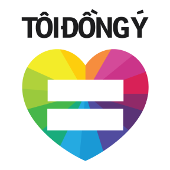

Viện nghiên cứu Xã hội, Kinh tế và Môi trường (iSEE) là một tổ chức khoa học và công nghệ. Chuyên hoạt động về quyền, có mối quan tâm lớn đến cộng đồng người thiểu số, người LGBT+,..
Hoạt động nổi bật: Chiến dịch "Tôi đồng ý",..
Link thông tin: https://www.isee.org.vn
 Là chiến dịch truyền thông xã hội do viện iSEE khởi xướng nhằm kêu gọi sự ủng hộ của xã hội về hôn nhân cùng giới Thời gian: "Tôi đồng ý 2013" - Hôn nhân bình đẳng, "Tôi đồng ý 2022" - Hôn nhân không khuôn mẫu